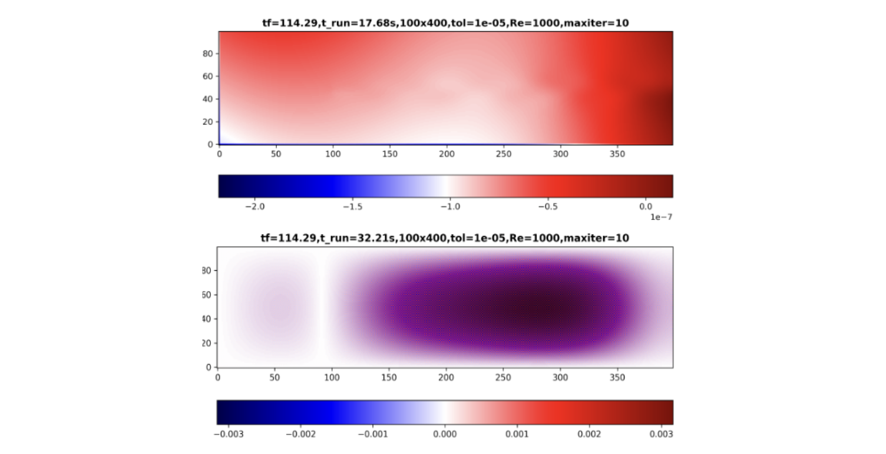
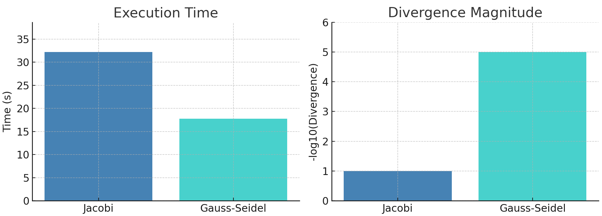

Poisson Solver
In incompressible flows, ensuring mass conservation requires solving the Poisson equation for pressure at each time step, based on the updated velocity field. This step is crucial for projecting the velocity field so that it satisfies the continuity equation.
Here, \(\mathbf{u}^*\) is the intermediate (non-divergence-free) velocity field computed from the momentum equation, and \(p\) is the pressure field used to correct it.
To solve (1) efficiently, two common iterative methods are widely used:
- Jacobi Method
- Gauss-Seidel Method
In this section, we will explain both methods step by step, provide Python implementations, and compare their performance.
Jacobi Method
The Jacobi method computes the solution to the Poisson equation iteratively by solving for each variable in terms of the others using values from the previous iteration.
Algorithm Steps
- Initialize Variables
Begin with an initial guess for the pressure field \( p \), and compute the right-hand side \( b \) from velocity divergence. - Precompute Coefficients
To simplify updates, define: $$ p_{\text{coef}} = \frac{1}{2(\Delta x^2 + \Delta y^2)} \tag{2} $$ $$ b_{i,j} \leftarrow b_{i,j} \cdot \frac{2(\Delta x^2 + \Delta y^2)\rho}{\Delta x^2 \Delta y^2} \tag{3} $$ - Jacobi Iteration
Update pressure on interior points: $$ p_{i,j}^{(k+1)} = p_{\text{coef}} \left[ (p_{i+1,j}^{(k)} + p_{i-1,j}^{(k)}) \Delta y^2 + (p_{i,j+1}^{(k)} + p_{i,j-1}^{(k)}) \Delta x^2 \right] - b_{i,j} \tag{4} $$ - Enforce Boundary Conditions
Use homogeneous Neumann boundaries: $$ \frac{\partial p}{\partial n} = 0 $$ - Compute Error
After each iteration: $$ \text{Error} = \sqrt{\frac{1}{N} \sum_{i,j} \left( p_{i,j}^{(k+1)} - p_{i,j}^{(k)} \right)^2} \tag{5} $$ - Check for Convergence
Stop when:- Error < tolerance
- Or maximum iterations reached
- Return Final Pressure Field
The final \( p \) approximately satisfies the Poisson equation within the specified tolerance.
def pressure_poisson(p, b, dx, dy, tol, maxiter):
"""
Solve the Poisson equation for pressure correction using Jacobi's iterative method.
Parameters:
-----------
p : numpy.ndarray
Current pressure field. This array will be updated iteratively.
b : numpy.ndarray
Right-hand side of the Poisson equation, derived from velocity divergence.
dx, dy : float
Grid spacing in the x and y directions.
tol : float
Convergence tolerance for the root-mean-square error.
maxiter : int
Maximum number of iterations. Accelerates the speed at the beginning of the iterations.
rho : density.
Returns:
--------
numpy.ndarray
The updated pressure field that satisfies the Poisson eq. within the specified tolerance.
Notes:
------
- Implements Jacobi's method, iteratively updating the pressure field.
- Enforces Neumann boundary conditions (zero pressure gradient) on all domain edges (this is just for the Cavity Flow case).
- The method stops when either the error falls below the specified tolerance or the maximum
number of iterations is reached.
"""
err = np.inf # Initialize huge error.
nit = 0 # Reset num iterations.
pcoef = 0.5 / (dx**2 + dy**2) # Simplifies code
b *= rho * dx**2 * dy**2 / (2*(dx**2 + dy**2))
while err > tol and nit < maxiter:
pn = p.copy()
p[1:-1, 1:-1] = (pcoef * ((pn[1:-1, 2:] + pn[1:-1, :-2])*dy**2
+ (pn[2:, 1:-1] + pn[:-2, 1:-1])*dx**2) - b)
# BCs. Openfield.
p[:, 0] = p[:, 1] # dp/dx=0 at x=0.
p[:, -1] = -p[:, -2] # p = 0 at x = L.
p[0, :] = p[1, :] # dp/dy = 0 at y = 0.
p[-1, :] = p[-2, :] # dp/dx = 0 at y = 2.
err = np.mean((p[1:-1, 1:-1] - pn[1:-1, 1:-1])**2)**0.5
nit += 1
return p
Gauss-Seidel
The Gauss-Seidel method improves on Jacobi's iterative solver by updating the pressure values in-place, using the most recent values during each iteration. This results in faster convergence. Additionally, this method has been implemented using Cython for even greater efficiency.
Algorithm Steps
- Initialize variables
Start with the current pressure field \( p \), and define the right-hand side \( b \) of the Poisson equation, derived from the velocity divergence. - Precompute coefficients
As in the Jacobi method, precompute the update coefficient and scale the RHS: $$ p_{\text{coef}} = \frac{1}{2(\Delta x^2 + \Delta y^2)} \tag{6} $$ $$ b_{i,j} \leftarrow b_{i,j} \cdot \frac{2(\Delta x^2 + \Delta y^2) \rho}{\Delta x^2 \Delta y^2} \tag{7} $$ - Gauss-Seidel iteration
Loop through the grid and update pressure in-place using: $$ p_{i,j} = p_{\text{coef}} \left[ (p_{i,j+1} + p_{i,j-1}) \Delta y^2 + (p_{i+1,j} + p_{i-1,j}) \Delta x^2 \right] - b_{i,j} \tag{8} $$ - Enforce boundary conditions
Apply Neumann boundary conditions: $$ \frac{\partial p}{\partial n} = 0 $$ Modify as necessary for the physical problem. - Compute error
Calculate the root-mean-square (RMS) error between iterations: $$ \text{Error} = \sqrt{\frac{1}{N} \sum_{i,j} \left( p_{i,j}^{(k+1)} - p_{i,j}^{(k)} \right)^2} \tag{9} $$ - Check for convergence
Stop iterating if either:- Error is less than the specified tolerance, or
- The maximum number of iterations is reached.
- Output
Return the final pressure field, which approximately satisfies the Poisson equation within the defined tolerance.
def pressure_poisson_gauss_seidel(p, b, dx, dy, rho):
"""
Solve the Poisson equation for pressure correction using the Gauss-Seidel method.
This function iteratively solves the pressure Poisson equation, which is derived from
the incompressible Navier-Stokes equations to ensure mass conservation. It uses the
Gauss-Seidel method for in-place updates, leveraging the latest pressure estimates
during each iteration for faster convergence.
Parameters:
-----------
p : numpy.ndarray
The pressure field (2D array) that needs to be updated in order to satisfy the Poisson equation.
b : numpy.ndarray
The Poisson's equation RHS (b term, 2D array) derived from the velocity divergence.
dx : float
Grid spacing in the x-direction.
dy : float
Grid spacing in the y-direction.
rho : float
Fluid density, used to scale the source term.
Returns:
--------
p : numpy.ndarray
Updated pressure field satisfying the Poisson equation within the specified tolerance.
Key Features:
--------------
1. In-place updates using Gauss-Seidel accelerate convergence compared to Jacobi's method.
2. Enforces Neumann boundary conditions (zero pressure gradient) on all domain edges (this is just for the Cavity Flow case).
3. Convergence is determined based on the root-mean-square (RMS) error between iterations.
"""
err = np.inf # Initialize a large error.
nit = 0 # Reset the number of iterations.
pcoef = 0.5 / (dx**2 + dy**2) # Precompute coefficient for simplicity.
b *= rho * dx**2 * dy**2 / (2 * (dx**2 + dy**2))
while err > tol and nit < maxiter:
pn = p.copy()
# Gauss-Seidel in-place update
p = gauss_seidel_iteration(p, b, pcoef, dx, dy)
# Apply boundary conditions
p[:, 0] = p[:, 1] # dp/dx=0 at x=0.
p[:, -1] = -p[:, -2] # p = 0 at x = L.
p[0, :] = p[1, :] # dp/dy = 0 at y = 0.
p[-1, :] = p[-2, :] # dp/dx = 0 at y = 2.
# Calculate error based on the new values
err = np.mean((p[1:-1, 1:-1] - pn[1:-1, 1:-1])**2)**0.5
nit += 1
return p
Comparison of Poisson Solvers: Jacobi vs. Gauss-Seidel
To assess the performance of the Jacobi and Gauss-Seidel methods in solving the Poisson equation, both algorithms were applied to the same flow setup. The figure below shows the resulting divergence fields for each method: the Jacobi solution is on the left, and the Gauss-Seidel solution on the right.

Divergence field results using Gauss-Seidel (above) and Jacobi (below) solvers.
For the same problem setup—identical grid resolution, boundary conditions, and convergence tolerance—the Gauss-Seidel method converged approximately 45% faster, completing in 17.78 seconds compared to 32.21 seconds for the Jacobi solver. Furthermore, the final divergence field computed using Gauss-Seidel was four orders of magnitude smaller, indicating significantly better enforcement of the incompressibility constraint.
This performance difference stems from how each method propagates corrections: Jacobi uses only values from the previous iteration, while Gauss-Seidel uses the most recently updated values within the same iteration, improving convergence efficiency. This leads to both faster run times and more accurate pressure fields.

Execution time and divergence comparison between Jacobi and Gauss-Seidel solvers.
Performance Optimization with Cython
To further improve performance, the Gauss-Seidel solver was implemented in Cython—a superset of Python that compiles to C. Cython enables C-like performance while retaining readable Python-like syntax. By compiling the innermost loops of the algorithm, execution time is significantly reduced.
```python def gauss_seidel_iteration(cnp.ndarray[cnp.double_t, ndim=2] p, cnp.ndarray[cnp.double_t, ndim=2] b, double pcoef, double dy, double dx): cdef int i, j
for i in range(1, p.shape[0] - 1):
for j in range(1, p.shape[1] - 1):
p[i, j] = pcoef * ((p[i, j+1] + p[i, j-1]) * dy**2 +
(p[i+1, j] + p[i-1, j]) * dx**2) - b[i-1, j-1]
return p